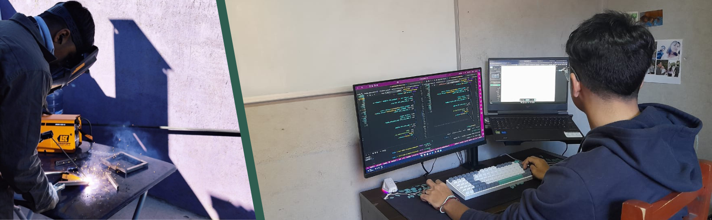
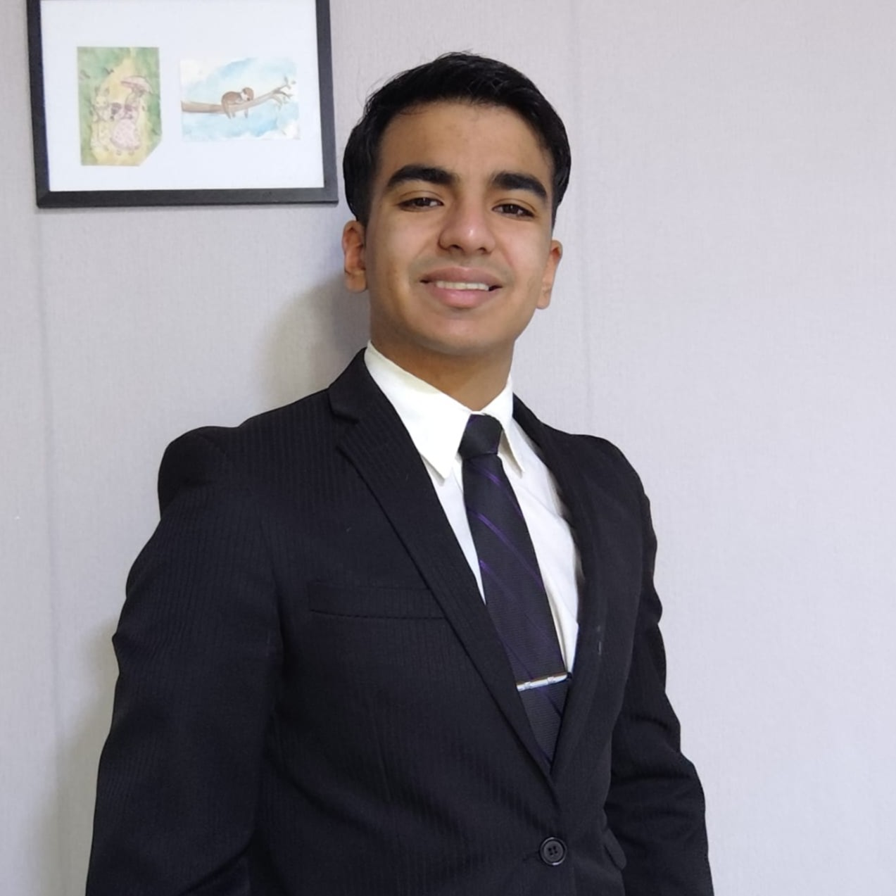
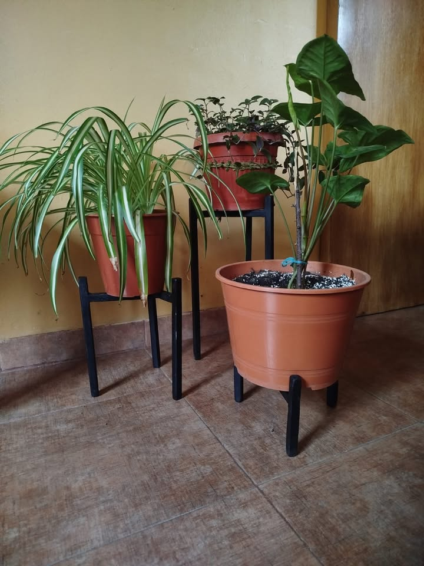
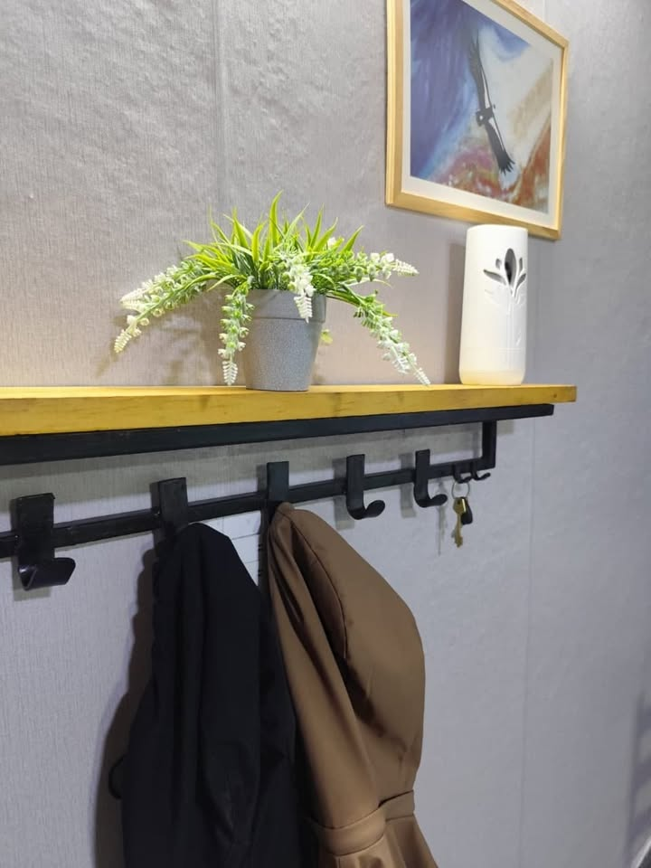
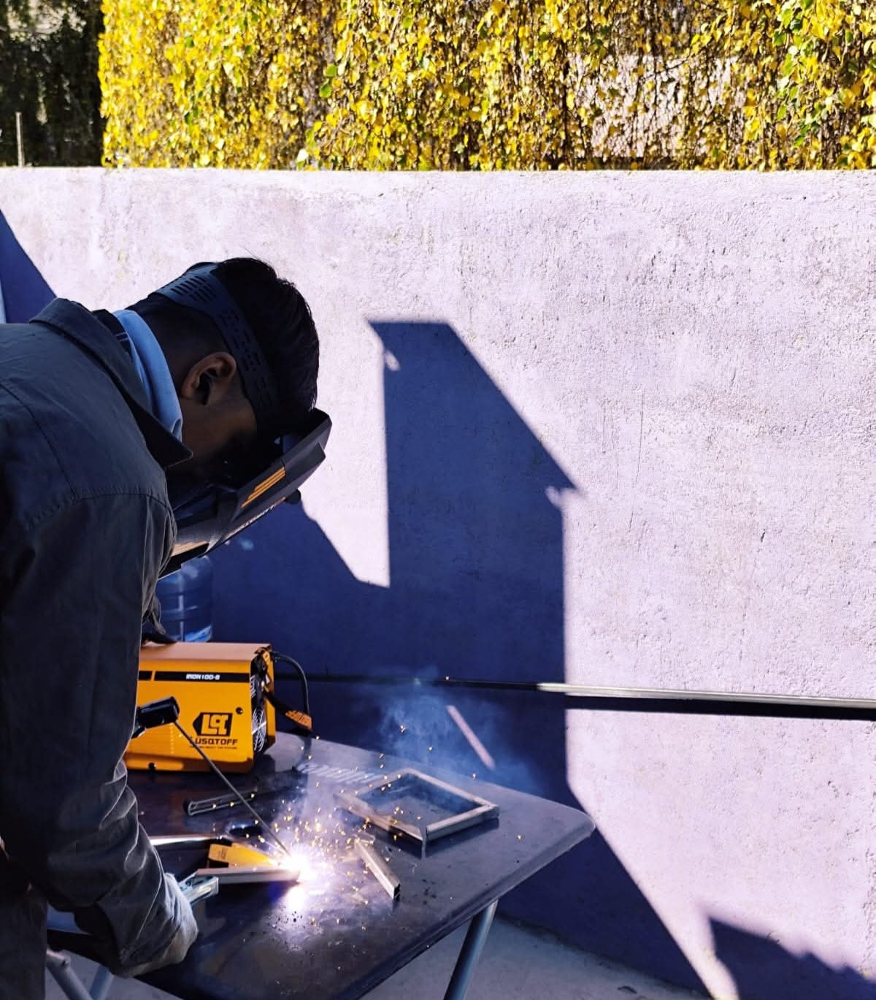
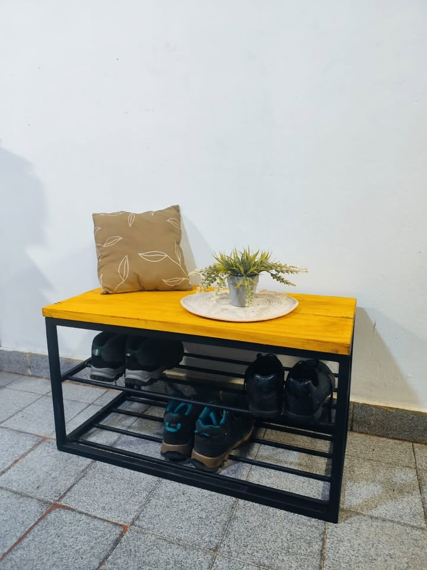
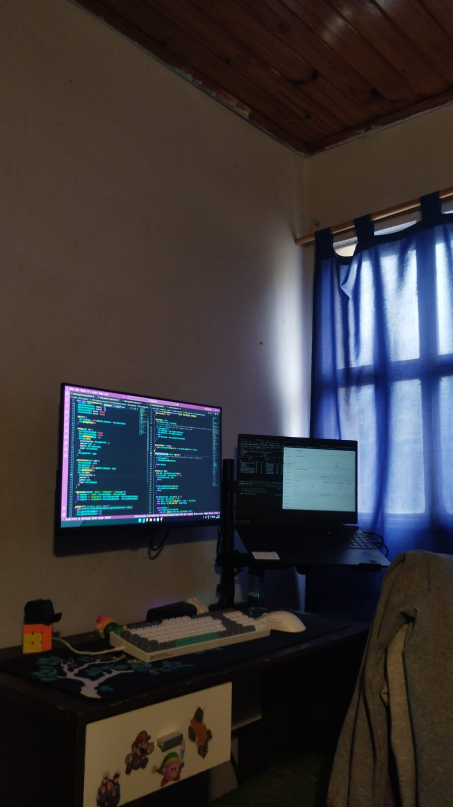
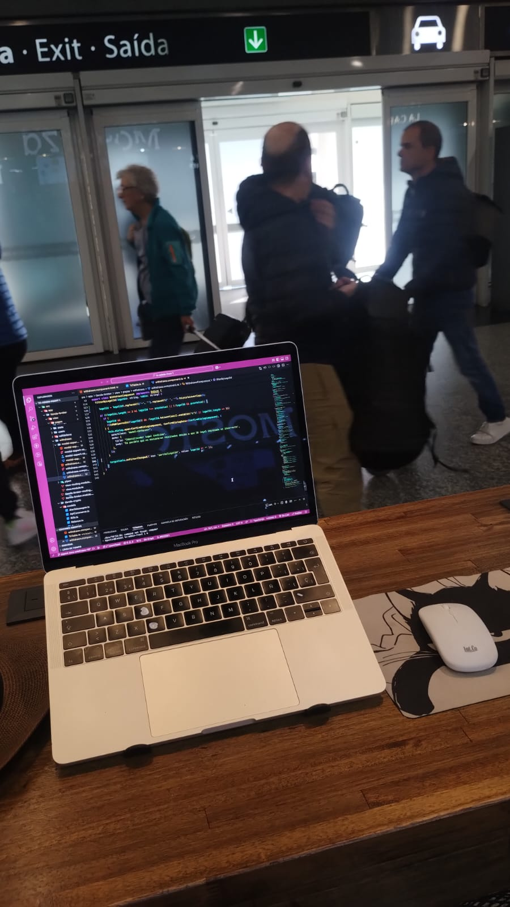
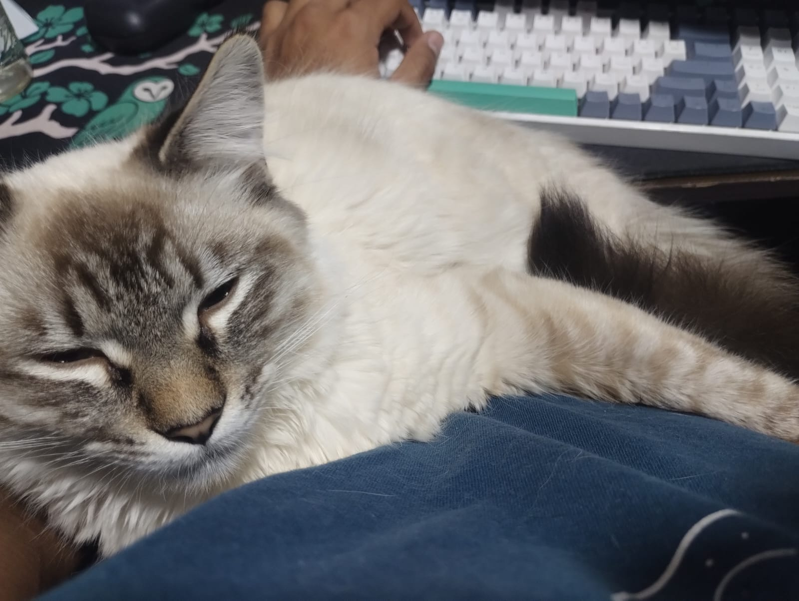
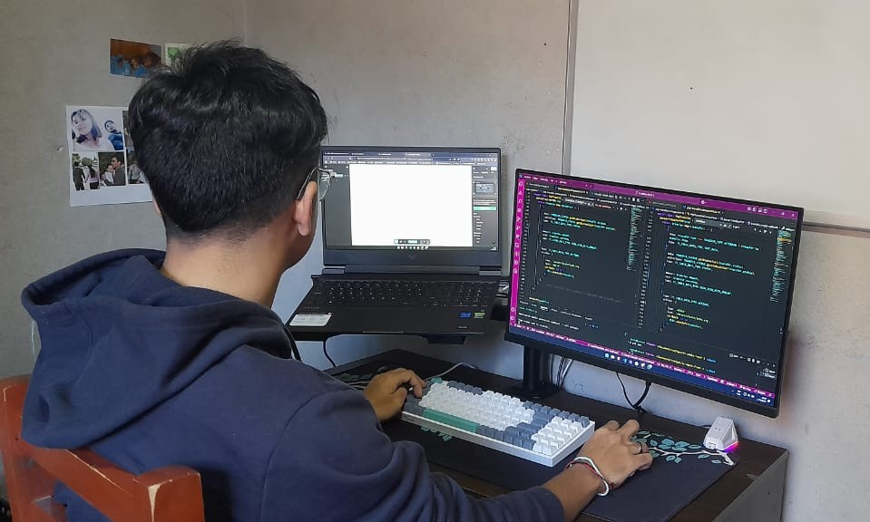

Empleado polivalente | Atención al cliente y tareas generales
Seguramente ya viste mi currículum, así que armé este espacio para que puedas conocer un poco más sobre mí, mi forma de trabajar y mi experiencia.
Así que… empecemos por lo más importante: quién soy...
Soy Leonel, una persona a la que le gusta aprender constantemente y hacer bien su trabajo, con interés en entender cómo funcionan las cosas, desde lo más simple hasta lo más complejo, y con facilidad para adaptarme a nuevas tareas en distintos entornos.
Trabajo con responsabilidad, manteniendo el orden y la prolijidad en cada tarea que realizo, cuidando los detalles y buscando siempre cumplir de la mejor manera posible, además de generar un ambiente positivo tanto con clientes como con compañeros.
me gusta aprender haciendo cosas
5 Hermanos - Esquel, Argentina
Mi experiencia en el supermercado fue muy dinámica. Pasé por distintas tareas como reposición, fiambrería y atención al cliente, lo que me permitió adaptarme rápidamente a lo que se necesitaba en el momento.
Disfruté mucho el contacto con la gente, generando un buen trato y un ambiente positivo. También me encargaba de mantener el orden, controlar el stock y asegurar que todo esté en condiciones.




Acero Andino - Esquel, Argentina
Acero Andino nació como una forma de reinventarme y aprender un oficio desde cero. Me encargo de todo el proceso: desde la idea hasta el producto final.
Diseño y fabrico muebles estilo industrial, gestiono materiales, realizo soldadura y también me ocupo de hablar con clientes, presupuestar y vender. Es un proyecto que refleja mi forma de trabajar: aprender, adaptarme y hacer las cosas bien.




Sixalime S.A.S - Buenos Aires, Argentina
Trabajé desarrollando un panel administrativo para una fintech, donde me tocó mejorar tanto el funcionamiento como la experiencia de uso.
Me enfoqué en optimizar tiempos de carga, rediseñar partes del sistema y desarrollar nuevas funcionalidades. Fue una experiencia que me ayudó a resolver problemas y adaptarme a cambios constantes en un entorno dinámico.
Si llegaste hasta acá, gracias por tomarte el tiempo de conocerme. Si creés que puedo aportar a tu equipo o simplemente querés contactarme, estoy disponible.
Siempre abierto a nuevas oportunidades y a seguir creciendo 🚀